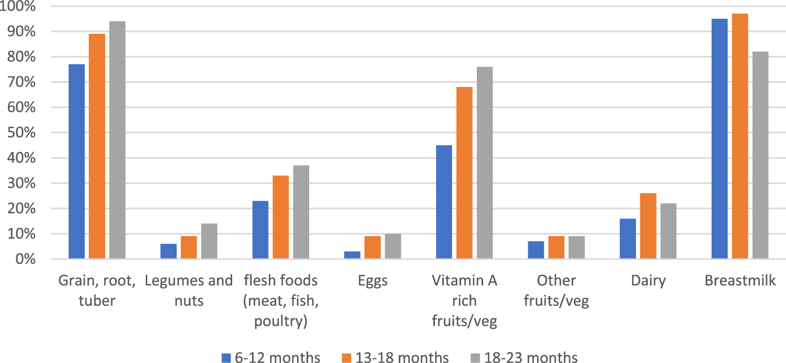

Welcome to my corner of the internet. Basic information about my research, publications and my educational background can be found on this website.
Please feel free to contact me to discuss anything – research, parenting, academics, teaching, hot chocolate or chihuahuas – in more detail.
University of California, Santa Barbara
MA Statistics, 2006University of California, Santa Barbara
MSPH Biostatistics, 2004Tulane University School of Public Health
BA Theoretical Mathematics, 2002University of California, Berkeley
Featured Publications
Global urban population exposure to extreme heat
Tuholske, Cascade, Kelly Caylor, Chris Funk, Andrew Verdin, Stuart Sweeney, Kathryn Grace, Pete Peterson, and Tom Evans (2021)
Proceedings of the National Academy of Sciences of the United States of America (118) 41
The association between agricultural conditions and multiple dimensions of undernutrition in children 6-23 months of age in Burkina Faso
Pinchoff, Jessie, William Turner, and Kathryn Grace (2021)
Environmental Research Communications 3 (6)

Exploring Strategies for Investigating the Mechanisms Linking Climate and Individual-Level Child Health Outcomes: An Analysis of Birth Weight in Mali
Grace, Kathryn, Andrew Verdin, Audrey Dorélien, Frank Davenport, Chris Funk, and Greg Husak (2021)
Demography 58 (2)
A Framework for Interdisciplinary Research in Food Systems
Grace, Kathryn, Sauleh Siddiqui, and Benjamin F. Zaitchik (2020)
Nature Food 2 (1)
Projects
MERIAM
Modelling Early Risk Indicators to Anticipate Malnutrition (MERIAM) is a four-year project funded by the UK government, which brings together an inter-disciplinary team of experts across four consortium partners: Action Against Hunger, the Graduate Institute of Geneva, John Hopkins University, and the University of Maryland. MERIAM’s primary aim is to develop, test and scale-up models to improve the prediction and monitoring of undernutrition in countries that experience frequent climate and conflict related shocks.
Climate Hazards Center
The Climate Hazards Center is an alliance of multidisciplinary scientists and food security analysts utilizing climate and crop models, satellite-based earth observations, and socioeconomic data sets to predict and monitor droughts and food shortages among the world’s most vulnerable populations. Through partnerships with USAID, USGS, and FEWS NET, the CHC provides early warning to save lives and secure livelihoods.
IPUMS PMA & Data Analysis Hub
IPUMS PMA harmonizes the Performance Monitoring for Action (PMA) data series. It provides an interactive web dissemination system for PMA data with variable documentation on thousands of harmonized variables on family planning, water and sanitation, and health. PMA is fielded by the Bill & Melinda Gates Foundation and Johns Hopkins University using streamlined and high-frequency data collection in 11 FP2020 pledging countries. The IPUMS PMA Data Analysis Hub is a blog offering tips and tools for working with IPUMS PMA data in R.

New Scholars
Postdoctoral Associate
Postdoctoral Associate
Postdoctoral Associate
Postdoctoral Associate
PhD Student
PhD Student
Research Scientist
Undergraduate Student
Undergraduate Student
Undergraduate Student